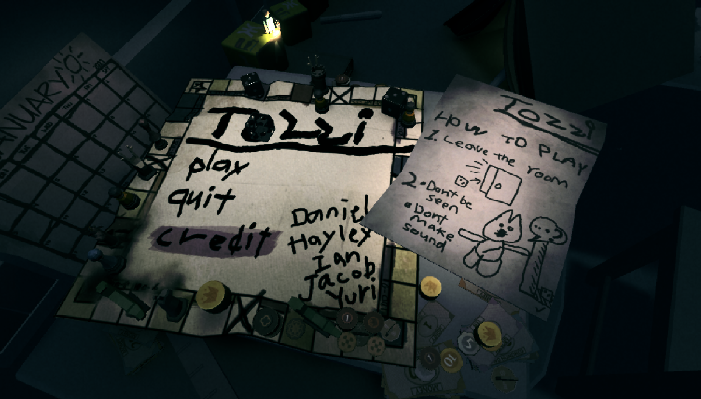
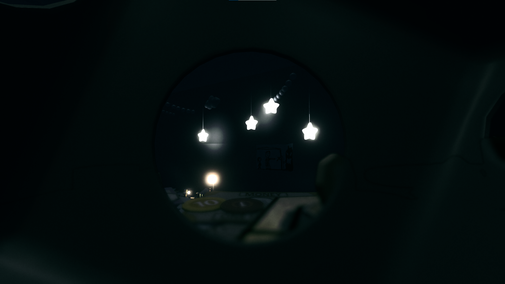

Title: TOZZI
Genre: Horror, Walking Sim
Worked on: Gameplay design, programming, level design
Worked with: Daniel Liu, Hayley Lin, Jacob Zhai, Yuri Wang
Download: iantyf.itch.io/tozzi
Originally made for GMTK 2022, TOZZI was ranked 15th/6125 in Creativity.
TOZZI is a first-person atmospheric horror adventure where the player can only perceive the environment from inside a dice. The concept is born from the theme "roll of the dice". It was immediately obvious to us that none of us wanted to make another puzzle/strategy game, not because they're boring (although most of the time, yes), but because there're way too many out there already. Another big reason we landed on the horror theme was that none of us played much horror games, let alone made one, so naturally we had to take on the challenge.

the "under the bedsheet" section
The intention is if we situate the player inside a dice in first person and they can only see the outside through the number holes, they will need to be more aware of the surroundings since there are many blind spots. As much as it's an interesting concept, it also poses quite a few difficult design challenges.
The one we spent the most time on was that the player simply, well, can't see. The balance between claustrophobic feeling and navigation was a constant challenge we battled throughout the design process. On one hand it was crucial to immerse the player in darkness and a sense of danger, on the other hand it's also meant to be a walking simulator that has a goal to reach. We iterated on the level many, many times based on playtest data to make the level easier to navigate, with intentional lighting and more guided prop placements. The end result is nowhere near perfect, but the learnings were immense.
In retrospect, we should have been more careful with the use of verticality in our levels, due to the huge emphasis on a sense of scale. When the player is already quite tiny in relation to the environment (i.e a dice in a room) and can't see well, even the most basic platforming like "getting up there" or "crossing this bridge" is inherently quite challenging.

Title: The Second Hand
Genre: Puzzle
Worked on: Lead Programming, Mechanics Design, Level Design
Worked with: Cameron Gonzalez, Lorg An, Tassneen Bashir
Download: iantyf.itch.io/thesecondhand
The second hand is a puzzle adventure game where the player tries to rewrite a story through manipulating time. The player plays as the spirit of the former owner of this antique clock shop, and gets to possess all the clocks in the shop and manipulate both the display time on each clock and the actual time in the world. The player gets to experience the story through multiple angles from different clocks, and use his limited abilities on the clocks to affect how the story unfolds.

rewind mechanic
The puzzle element in the game is intended to be light, so that the player may choose to only be a spectator and leave the story as is. It also means that the puzzling shouldn't be punishing at all - the player should be able to freely revisit past dialogues, try different actions, without having to load a save point or restart the game.
Therefore, the game features a special rewind/fastforward system, which allows the player to go back and forward in time whenever and however much they want. It is implemented through an event-based system with a tree structure, that keeps track of all the decisions made and animations that has been triggered so far. When the player chooses to rewind, it backtracks and plays all animations in reverse order with a negative speed. This minimizes data storage and ensures perfect rewinding that can be triggered and stopped at any point.

opening narrative